Palavras de Simone
Prezada equipe CQ MedTech LATAM,
Ao concluirmos mais um trimestre em 2024, gostaria de dedicar um momento para reconhecer o
ótimo trabalho e dedicação que cada um de vocês demonstrou ao longo do ano. O compromisso de
vocês tem sido instrumental no avanço de nossas iniciativas, desde o Projeto Simplicity até
a integração end-to-end e o aprimoramento da experiência do cliente, entregamos resultados
excepcionais.
Nossa jornada transformacional em gestão da qualidade—caracterizada pela integração de
Inteligência Artificial, Machine Learning e Automação através de projetos globais como o
QuIn—reflete nossa incansável busca pela excelência. Além disso, nossa iniciativa i-Prevent
exemplifica nosso foco em qualidade proativa e prevenção, fortalecendo nossa cultura de
qualidade com ênfase nos CDs e LOCs.
Neste outubro, celebramos o Mês da Qualidade com uma participação notável em atividades tanto virtuais quanto presenciais, demonstrando o engajamento e entusiasmo de nossa equipe. Também quero destacar a importância dos nossos resultados na pesquisa do CREDO, que demonstra uma taxa de participação impressionante de 96%. Ressaltando nosso alinhamento com os valores centrais da empresa, que servem como a base sólida de nosso sucesso.
Incentivo todos vocês a refletirem sobre essas conquistas enquanto continuamos nossa jornada juntos. Agradeço pelo trabalho árduo e pelo compromisso com a qualidade.
OUR CREDO FOCUS
2024 – Nossa Pesquisa Credo / Resultados CQ LATAM
Estimado time CQ LATAM:
Da parte da equipe de liderança, queremos expressar nossa gratidão pelo seu comprometimento e pela excelente participação na pesquisa de Credo realizada em setembro. Os resultados nos oferecem a oportunidade de avaliar em quais áreas estamos nos fortalecendo e em quais devemos prestar mais atenção para melhorar tanto como equipe, quanto como companhia.
Como líder do Credo, tenho orgulho de compartilhar os excelentes resultados deste ano: alcançamos 96% de participação e uma pontuação geral de 87%. É importante destacar que, ao comparar os resultados de 2023 com os de 2024, crescemos três pontos em Inclusão, permanecemos estáveis em Desenvolvimento de Talentos e quatro pontos em Saúde e Bem-Estar. Embora tenhamos consciência de que existem áreas de oportunidade de melhoria, estamos comprometidos em desenvolver planos de ação que incentivem a melhoria contínua e que o trabalho em equipe da CQ LATAM é a força motriz para alcançar novos objetivos.
Por fim, queremos destacar o compromisso de cada um de vocês em tornar a J&J uma companhia melhor, tanto para os pacientes quanto para todos nós que fazemos parte dela.
Our Credo Survey CQ LATAM Results
arrow_upwardQUALITY MONTH 2024 RECAP
Alcançamos uma conexão máxima de 193 pessoas em uma sessão e tivemos uma média de 80 pessoas conectadas durante todas as nossas sessões. Estivemos conectados e focados na qualidade por mais de 900 minutos, discutindo como geramos valor e impulsionamos a Johnson & Johnson para o futuro. Muito obrigado por fazer parte do Mês da Qualidade 2024! Lembre-se, a qualidade é um esforço contínuo ao longo do ano, e juntos, nós fazemos acontecer!
KEY PROJECTS
Novo Portal CQ MedTech LATAM
Estamos empolgados com o nosso Novo Portal CQ MedTech LATAM! O lançamento foi feito durante a reunião de abertura do Mês da Qualidade 2024 e trata-se de um novo canal de comunicação da organização CQ MT LATAM para todos os funcionários da MedTech LATAM. Fique ligado e venha conhecer clicando no link abaixo!
CQ ENABLING
Facilitando o crescimento do negócio
GnO - Six Pack
Projeto de melhoria LATAM para Introdução de Novos Produtos (NPI) & Descontinuação de Produto
Convidamos vocês a conhecer os resultados e melhorias que estão sendo desenvolvidos para NPI & PD LATAM, além da equipe que desenvolveu esta iniciativa. Clique aqui.

Este projeto foi implementado para otimizar o processo de Introdução de Novos Produtos (NPI) e descontinuação de produtos (PD) em todas as franquias. Foram criados documentos não GxP, que incluem um guia para NPI com checklist e um guia para PD com mapeamento. Esses recursos ajudam a identificar interrupções potenciais por requisitos de qualidade antes do lançamento. Além disso, garantem o cumprimento do Sistema de Gestão de Qualidade de CQ MedTech LATAM com os padrões globais da J&J e as necessidades regulatórias.
Projeto Supernova
Program Amalgama - Kick off of Project Supernova
Em outubro de 2024, tivemos o início do Projeto Supernova com a Equipe de Liderança da CQ MT LATAM.
O Projeto Supernova é uma iniciativa regional para:
- Esclarecer o processo de Fluxo de Trabalho e Responsabilidades para Super Users Locais e Regionais de CQ.
- Esclarecer o Processo de Qualificação para Super Users de CQ para cada Ferramenta de TI.
- Governança de todos os Super Users de CQ para apoiar/aprovar aprimoramentos de software e permitir a continuidade dos negócios. O foco principal deste projeto está nos seguintes Ativos de Software ou módulos de propriedade de CQ: Windchill, EtQ (Todos os módulos), ECM (CST), SUMMIT LMS, SAP BtB (funcionalidades de Gestão de Qualidade) e outras ferramentas digitais globais (Citizen Development).
Projeto Supernova
- Início: Setembro de 2024
- Meta para finalização: Março de 2025
Escopo:
- Ferramentas de TI nas quais os funcionários da CQ MT LATAM estão mapeados como Super Users.
- Redes de Super Users SCSS.
Framework
arrow_upwardNossa Jornada de Projetos
arrow_upwardEstrutura
arrow_upwardCustomer Value & Support (CV&S)
arrow_upwardCUSTOMER EXPERIENCE
Remoção de sacolas de nylon para os produtos fracionados na Argentina
A presente mudança foi direcionada à remoção da utilização de sacolas de nylon para os produtos aprovados para fracionamento de venda unitária em embalagem primária para a franquia Ethicon.
Objetivo
Reduzir os custos de operação e material para a embalagem de produtos fracionados, com análise todas as áreas pertinentes para garantir a integridade dos produtos para uso em pacientes.
Clique no botão ao lado para visualizar o infográfico.

CX LATAM
O projeto de CX LATAM foi desenvolvido em 3 principais pilares:
- CX Academy;
- Explorer;
- Projetos locais;
Convidamos você a conhecer as principais conquistas em cada pilar e suas contribuições e impactos de acordo com cada público-alvo.
Customer Focus Operation
1º Encontro de Qualidade com Distribuidores da MedTech Brasil
No dia 02 de Agosto de 2024, realizamos o 1º Encontro Nacional de Qualidade com Distribuidores na Johnson & Johnson MedTech na sala Brasil do JK, em São Paulo. O evento contou com a participação de uma equipe multidisciplinar: Commercial Quality, HCC, Brand Protection, Service Solution e Canal Indireto e teve como objetivo fortalecer a parceria com nossos Distribuidores a partir de uma agenda de Compliance.
Detalhes do encontro
arrow_upwardSimplicity
Simplicity LATAM Q3 Highlights: Impulsionando Eficiência e Inovação com Novas Soluções Digitais
No terceiro trimestre, o programa Simplicity LATAM realmente se destacou com lançamentos empolgantes! Oito (8) novas soluções digitais foram lançadas dentro da CQ MedTech, desenvolvidas não apenas para o nível local (Colômbia e México), mas também em nível regional, resultando em uma economia anual de mais de 500 horas! Essas automações estão agilizando nossos processos ao eliminar tarefas transacionais e manuais, aumentando significativamente a eficiência e a produtividade da equipe. Parabéns a todas as equipes envolvidas!
Soluções digitais
Para uma visão geral de cada solução digital, consulte as descrições abaixo ou entre em contato com o Proprietário da Solução Digital.
Se você tiver alguma ideia para utilizar ferramentas digitais que melhorem a agilidade e a eficiência dos processos, não hesite em entrar em contato com nossa equipe do Simplicity LATAM. Vamos continuar a avançar em nossa jornada digital transformadora!
- Luiza Dias – Líder de Projeto e SME do Brasil
- Matheus Costa - SME Regional
- Lorena Sanabria – SME do México
- Fernanda Hurtado – SME do Cluster Norte
- Veronica Ramirez - SME do Cluster Sul
- Adhara Garcia – Sponsor
Intake Late Dashboard Regional – CoE Product Complaint
arrow_upward
Project Anemo Regional
arrow_upwardCQ MT LATAM Communication Request Regional
arrow_upwardAcompanhamento de reclamações de fornecedores do México
arrow_upwardPOLO Digital Solution Colombia
arrow_upwardStop Shipment & Field Action LATAM Report Regional
arrow_upwardGerenciamento de Download de Temperatura para TSP Shipping Colombia
arrow_upwardManual para Avaliação de Defeitos (PPV) Colombia
arrow_upwardNews & Update
Atividades DE&I, Health and Wellbeing
Diálogos de inclusão em LATAM
EQUIPE REGIONAL
Durante o Q3, foram realizadas reuniões lideradas pelas lideranças para conversarmos sobre inclusão com as equipes de LATAM. Confira algumas dessas sessões com convidados especiais!
Uncounsious bias dialog
Regional Latam
Durante nossa reunião regional de setembro, tivemos uma conversa aberta sobre o Viés Inconsciente, trazendo conceitos principais, tipos de viés que qualquer pessoa pode ter e em que situações precisamos estar atentos para evitar tomar decisões baseadas em nossos próprios vieses.
Saiba mais
arrow_upwardJJRC Audits Updates
Brasil
Recebemos o resultado do último Follow-Up realizado no Stock Point de Porto Alegre, com a melhor classificação possível: green/green!